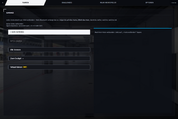

OmegaSim Wiki – die Idee dazu stammt von Gnen54. Hier stehen die offenen Artikel von Nutzer Luuke42 unter der Lizenz CC BY-SA 4.0.
Hauptseite
Dieses Wiki sammelt Wissen und Hilfe rund um OmegaSim, eine freie App, mit der man Carrera HYBRID-Autos per Bluetooth steuert: mit eigenem Fahrgefühl, Rennen, NPC-Gegnern, Safety Car, Boxenstopps und Mehrspieler. Derzeit gibt es hier 30 Artikel.
Chrome oder Edge mit Web Bluetooth, am PC oder Android-Handy
nötig für WLAN-Mehrspieler und den schnellsten Funkweg
MIT-Lizenz, Fehler melden über „Issues“
Erste Schritte
- OmegaSim im Browser öffnen oder die Android-App installieren.
- Auto einschalten und in der Garage mit + Auto verbinden koppeln.
- Unter Optionen → Fahrgefühl eine Voreinstellung wählen, für den Anfang Arcade.
- Im Cockpit losfahren oder unter Rennen eine Rennart starten.
- Hängt das Auto: Keine Reaktion des Fahrzeugs.


Hardware
- Carrera HYBRID – das Auto: Aufbau, Sensor, Akku, Bluetooth
- Strecke – Bahnteile, Ausdruck-Strecke und Streckenscan
Software
- Firmware – was über die Software im Auto bekannt ist
- Original-App – die Hersteller-App und was OmegaSim anders macht
- OmegaSim – Überblick über die App
- OmegaBle – das Bluetooth-Plugin der Android-App
OmegaSim im Detail
| Fahren | Fahrverhalten · Verschleiß · Virtuelles Fahren |
|---|---|
| Rennen | Rennarten · Boxenstopp · Challenges |
| Gegner | NPC-Fahrverhalten · Safety Car und Reinigungswagen |
| Strecke | Strecken- und Raum-Editor |
| Zusammen | Mehrspieler (WLAN und mehrere Spieler an einem Gerät) |
| Grundlagen | Hexadezimalsystem · Bluetooth Low Energy · Aufbau von OmegaSim · Vibe-Coding · Glossar |
Rund um OmegaSim
- Wunschliste – gewünschte Funktionen und alles, was noch in Arbeit ist
- Andere Apps und Initiativen – Original-App, Community-Apps, Zubehör
Zubehör
- CH ControlBox – RC-Funke als Bluetooth-Gamepad für OmegaSim
- Startampel – echte Startampel am Tisch (Raspberry Pi / Pico)
Fehlerbehebung
- Fehlerbilder und Abhilfe – hohe Latenz, springende Autos, Android-Einstellungen, kompatible Browser
- Keine Reaktion des Fahrzeugs – Auto steht mit Licht und eingeschlagenen Rädern und lässt sich nicht koppeln
Mitmachen
- Mitmachen – Artikel schreiben und verbessern, mit und ohne KI
- Anleitung für KIs – Arbeitsweise für KI-Assistenten, die am Wiki oder an OmegaSim arbeiten
- Alle Seiten · Kategorien · Gewünschte Seiten
Zuletzt bearbeitet
Ganz oben steht die zuletzt bearbeitete Seite.
Liste von Abkürzungen:
- N
- Neue Seite (siehe auch die Liste neuer Seiten)
- K
- Kleine Änderung
- B
- Änderung durch einen Bot
- (±123)
- Die Änderung der Seitengröße in Bytes
27. Oktober 2026
- UnterschiedVersionen Strecke 06:01 +85 Luuke42 Diskussion Beiträge (Link zum Infrarot-Video der Grand Garage (ab 1:22) ergänzt)
- UnterschiedVersionen Hauptseite 05:31 +7.681 Luuke42 Diskussion Beiträge (Startseite: ohne Versionsnotiz, Seitenübersicht, neue Seiten (mit KI erstellt))
- UnterschiedVersionen N Andere Apps und Initiativen 05:31 +3.232 Luuke42 Diskussion Beiträge (Überarbeitet und vertieft: Grundlagen, Formeln, Beispiele (mit KI erstellt, Claude))
- UnterschiedVersionen N Wunschliste 05:31 +5.846 Luuke42 Diskussion Beiträge (Überarbeitet und vertieft: Grundlagen, Formeln, Beispiele (mit KI erstellt, Claude))
- UnterschiedVersionen N Fehlerbilder und Abhilfe 05:30 +8.326 Luuke42 Diskussion Beiträge (Überarbeitet und vertieft: Grundlagen, Formeln, Beispiele (mit KI erstellt, Claude))
Alle Änderungen: Letzte Änderungen · Neue Artikel: Neue Seiten
Seitenübersicht
Alle Seiten des Wikis mit Bereich, Inhalt, letzter Änderung, letztem Bearbeiter und Größe in Byte. Die drei letzten Spalten liest das Wiki bei jedem Aufruf selbst aus.
| Bereich | Seite | Inhalt | Zuletzt geändert | von | Byte |
|---|---|---|---|---|---|
| Grundlagen | Hexadezimalsystem | Zahlensysteme, Bits und Bytes, Hex-Codes in OmegaSim | 27.10.2026 | Luuke42 | 28,171 |
| Grundlagen | Bluetooth Low Energy | Funk, GATT, Charakteristiken, Latenz – wie die Übertragung funktioniert | 27.10.2026 | Luuke42 | 35,483 |
| Grundlagen | Aufbau von OmegaSim | Programmiersprachen, Architektur, Build, Updates | 27.10.2026 | Luuke42 | 34,902 |
| Grundlagen | Vibe-Coding | Programmieren durch Beschreiben – wie OmegaSim entsteht | 27.10.2026 | Luuke42 | 16,048 |
| Grundlagen | Glossar | Alle Fachbegriffe von A bis Z | 27.10.2026 | Luuke42 | 22,378 |
| Hardware | Carrera HYBRID | Das Auto: Aufbau, Sensor, Akku, Protokoll | 27.10.2026 | Luuke42 | 35,930 |
| Hardware | Strecke | Alle Streckenteile mit Bild und Code, Bahn- und Ausdruck-Modus, Streckenscan | 27.10.2026 | Luuke42 | 52,216 |
| Software | Firmware | Die Software im Auto: was bekannt ist und was nicht | 27.10.2026 | Luuke42 | 22,562 |
| Software | Original-App | Die Hersteller-App und der Unterschied zu OmegaSim | 27.10.2026 | Luuke42 | 19,268 |
| Software | OmegaSim | Überblick über die App | 27.10.2026 | Luuke42 | 36,935 |
| Software | OmegaBle | Das native Bluetooth-Plugin der Android-App | 27.10.2026 | Luuke42 | 51,069 |
| Fahren | Fahrverhalten | Physikmodell, Pacejka, Fahrgefühle, Getriebe | 27.10.2026 | Luuke42 | 56,107 |
| Fahren | Verschleiß | Reifen, Tank, Schaden, Wetter | 27.10.2026 | Luuke42 | 28,433 |
| Fahren | Virtuelles Fahren | Fahren ohne echtes Auto | 27.10.2026 | Luuke42 | 25,285 |
| Rennen | Rennarten | Alle Renntypen, Start, Aufstellung, Meisterschaft | 27.10.2026 | Luuke42 | 28,881 |
| Rennen | Boxenstopp | Ablauf, Minigame, NPC-Boxenstopp | 27.10.2026 | Luuke42 | 26,461 |
| Rennen | Challenges | Wöchentliche Challenges und Community-Bestzeiten | 27.10.2026 | Luuke42 | 27,094 |
| Gegner | NPC-Fahrverhalten | Computergegner: Tempo, Ideallinie, Überholen, MAX-Stufe | 27.10.2026 | Luuke42 | 51,777 |
| Gegner | Safety Car und Reinigungswagen | Gelbphasen, Parken, Einparkfolge | 27.10.2026 | Luuke42 | 27,315 |
| Strecke | Strecken- und Raum-Editor | Editor, Zufallsstrecke mit Formel, Raumgestalter | 27.10.2026 | Luuke42 | 50,092 |
| Zusammen | Mehrspieler | WLAN-Mehrspieler und mehrere Spieler an einem Gerät | 27.10.2026 | Luuke42 | 31,927 |
| Zubehör | CH ControlBox | RC-Funke als Bluetooth-Gamepad | 24.10.2026 | Gnen54 | 5,685 |
| Zubehör | Startampel | Echte Startampel am Tisch | 24.10.2026 | Gnen54 | 9,484 |
| Hilfe | Keine Reaktion des Fahrzeugs | Auto hängt mit Licht und eingeschlagenen Rädern | 24.10.2026 | Luuke42 | 548 |
| Mitmachen | Mitmachen | Artikel schreiben und verbessern, mit und ohne KI | 26.10.2026 | Luuke42 | 3,999 |
| Mitmachen | Anleitung für KIs | Arbeitsweise für KI-Assistenten | 26.10.2026 | Luuke42 | 6,205 |
| Mitmachen | Vorlage:Stand | Versionskasten oben auf jeder Seite | 26.10.2026 | Luuke42 | 1,824 |
| Hilfe | Fehlerbilder und Abhilfe | Hohe Latenz, springende Autos, Android-Einstellungen, Browser | 27.10.2026 | Luuke42 | 8,326 |
| Mitmachen | Wunschliste | Gewünschte Funktionen und alles in Arbeit | 27.10.2026 | Luuke42 | 5,846 |
| Software | Andere Apps und Initiativen | Original-App, Community-Apps, Zubehör | 27.10.2026 | Luuke42 | 3,232 |
Zahlen: 30 Artikel · 24 Dateien · 115 Bearbeitungen · 6 angemeldete Benutzer. Weitere Listen: Alle Seiten · Alle Dateien · Kategorien · Gewünschte Seiten.